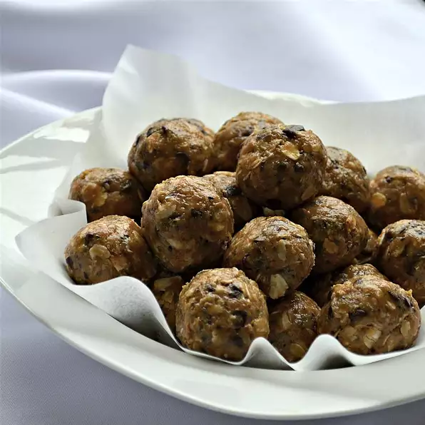

No-Bake Energy Balls

Description:
Quick and easy, no-bake energy balls! Perfect for a small, healthy snack!
Ingredients:
- 1 cup old-fashioned oats
- ½ cup peanut butter
- ½ cup ground flax seed
- ½ cup chocolate chips
- ⅓ cup honey
- 1 tablespoon chia seeds (Optional)
- 1 teaspoon vanilla extract
Instructions:
- Combine oats, peanut butter, ground flaxseed, chocolate chips, honey, chia seeds, and vanilla extract together in a bowl.
- Cover and chill the dough in the refrigerator for 30 minutes.
- Remove chilled dough from the refrigerator
- Roll into twenty 1-inch diameter balls